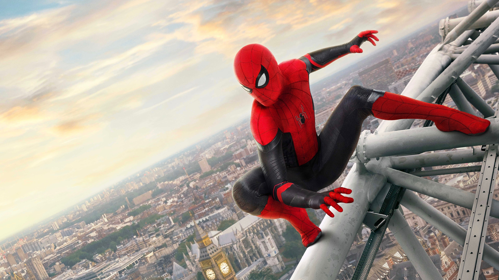

About Spiderman
Spider-Man ist eine Comicfigur, die von Peter Parker verkörpert wird. Durch den Biss einer radioaktiven Spinne erhält er übermenschliche Kräfte und kämpft als Superheld gegen Verbrechen. Er ist bekannt für sein Spinnenkostüm und seine menschlichen Probleme. Spider-Man ist eine beliebte und ikonische Figur in Comics, Filmen und Spielen.
Spiderman in his suit!
Characteristics
- Superhero
- Strong
- Makes some mistakes
- Just a teenager behind his mask
- Courage
Spider-Man ist ein verantwortungsbewusster Held, der sich für den Schutz der Hilflosen einsetzt. Als Peter Parker, ein einfacher Teenager, jongliert er mit alltäglichen Problemen. Er zeigt einen sarkastischen und humorvollen Charakter, auch in gefährlichen Situationen. Mit Tapferkeit und Mut stellt er sich überwältigenden Gegnern und persönlichen Herausforderungen. Spider-Man verkörpert Hoffnung und Inspiration für die Menschen und ist eng mit seiner Heimatstadt New York verbunden. Trotz seiner Kräfte ist er fehlbar und menschlich, was ihn für viele Leser und Fans ansprechend macht.
Friends
Click on the link below to see more about Spiderman!
More informations about Spiderman